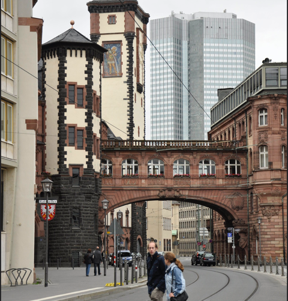
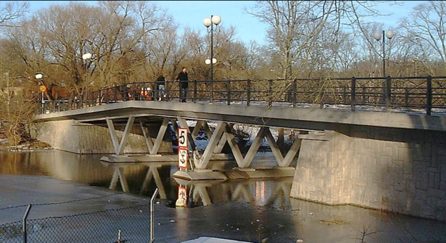

Over 400 years ago, prisoners in Venice were marched from the court at Doge’s Palace to their prison cells by way of the Bridge of Sighs. As they crossed the 1603 covered bridge over the Rio di Palazzo on their way to jail, legend says they would sigh in despair at their last sight of the city before imprisonment.
Sighing in despair is only one reason for sighing.
Why Do We Sigh?
1) Physiological
A sigh’s not just a sigh — it’s a fundamental life-sustaining reflex.
First and foremost that long audible exhalation, called a sigh, ensures proper lung function.
The sigh is a response to the brain’s command to re-inflate the alveoli. The two tiny clusters of nerve cells in the brain’s stem — the region that, unbidden, automatically takes charge of breathing, sleeping, heart rate — orchestrates the sigh. The alveoli control the body’s traffic in oxygen and carbon dioxide. The hundreds of millions of the tiny sacs in the lungs, inflate with every breath, providing oxygen to the blood, before being pumped to the rest of the body.
If breathing continues in one state for too long, the lungs become stiffer with less gas exchange, and sighing works to draw more air into lungs, making for more efficiency again. So a sigh here and there can help make your breathing more balanced.
The Cleveland Clinic tells us that the average person can sigh without even noticing, likely as much as twelve spontaneous sighs per hour.
2) Emotional
Sighing may be a way of relieving stress and pain when often breathing becomes shallow and uneven. Sighing can bring breathing back to normal and help calm. It is also thought that the noise a person makes when sighing produces a relaxing effect.
Sighing has been associated with specific emotions for a very long time.
Not just a response to sadness, despair, depression, exasperation, disappointment, defeat, or exhaustion, we often sigh in relation to the more pleasurable contentment, relief, winning, or a job well done.
3) Manipulative
Psychiatrists tell us that a sigh can act as a subtle manipulation tactic used to express contempt, annoyance, or martyrdom, aiming to make others feel guilty, self-doubting, without the user voicing explicit demands.
Often employed as a passive-aggressive tactic this nonverbal cue creates tension to control situations, shift blame, or avoid confrontation.
While a sigh can be a conscious or unconscious tool of manipulation, it is important to distinguish it from the physiological need to sigh to reset the nervous system or an authentic expression of sadness or stress.
Bridges Echoing the Bridge of Sighs in Venice
“Bridge of Sighs” has been applied by association to the despair of people crossing from the Doge’s Palace in Venice to imprisonment. Other similar covered bridges around the world have been named Bridge of Sighs — many having some association with despair and angst, be it paying taxes, taking exams, or heading to imprisonment.


Oh dear! We have seen a sigh is not just a sigh! Apologies to Casablanca aficionados!